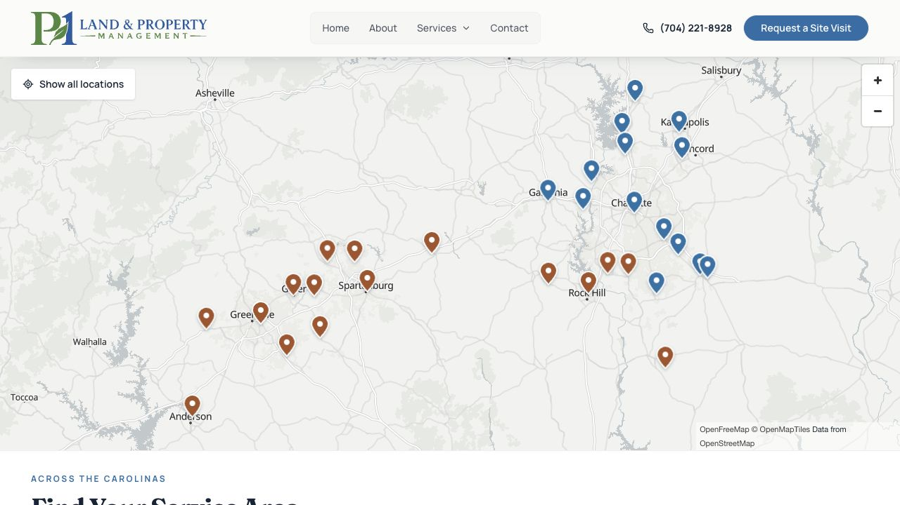

Where we work.
Discuss the property location, work needed and access. Exact project coverage and availability are confirmed during qualification.
Properties of an acre or moreUpstate South Carolina + Greater CharlotteLand · Water · Ongoing care
Find your area.
Greater Charlotte & SC border
Charlotte · Concord · Gastonia · Lake Norman · York · Lancaster · Union
Location-page concept →Map art direction: geographically accurate two-region overview with labelled cities and a text alternative. Exact coverage boundary requires owner verification; no invented radius or office pins.
Communities across two regions.

Capability before city keywords.
01Land clearing & forestry mulchingOpen acreage and access with clearing suited to the land.↗02Grading & site preparationShape the ground for access, drainage and the next stage.↗03Drainage solutionsUnderstand where water enters, collects and needs to go.↗Confirm location and scope.
Do you cover my address?
Send the address or city and requested work. P1 confirms exact coverage and availability.
Do you have a local office here?
Do not infer an office from a service-area page. Owner-verified office facts are required.